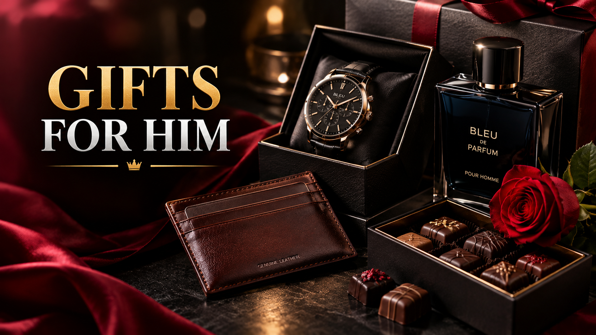

Valentine's Day Gifts for Him 2027
Published October 12, 2026 · Updated October 12, 2026 · By EventBuzz Team

Shopping for him on Valentine's Day has a reputation for being hard, but it does not have to be. Men tend to appreciate gifts that are useful, well-made, and clearly chosen with their actual life in mind — a watch he will wear every day beats a decorative trinket every time. Valentine's Day 2027 falls on Sunday, February 14, and this guide rounds up the categories that consistently win: watches, grooming, tech accessories, gifts matched to his hobbies, and experiences you share. It closes with an honest list of what to avoid, so the day lands exactly as you want it to.
Watches: The Timeless Pick
A watch is to him what jewelry is to her — wearable, personal, and used every single day. The market has never been wider, so match the watch to his style:
- Minimalist dress watches: slim case, clean dial, leather strap. This is the safest style and looks right from the office to dinner. Brands at every price point offer excellent minimalist lines.
- Sport and field watches: rugged, water-resistant, often with fabric or rubber straps. Perfect if he is outdoorsy or prefers casual wear.
- Smartwatches: if he is a tech person and tracks workouts, a current-generation smartwatch with a nice strap bundle is both romantic and practical.
- The strap trick: a set of quality leather or metal straps for a watch he already owns refreshes a gift he clearly loves — at a fraction of a new watch's price.
Check his wrist: if he already wears a watch daily, a strap set or a watch winder is smarter than a replacement. If he never wears one, a minimalist style is the easiest introduction.
Grooming: Upgrades He Would Not Buy Himself
Most men buy the cheapest version of everything that goes on their face. That is exactly why grooming gifts feel so indulgent — they are luxuries he enjoys but would never purchase:
- Cologne done right: if he has a signature scent, a fresh bottle is a guaranteed win. Otherwise choose a discovery set from a respected fragrance house so he picks the winner. Woody, citrus, and fresh-aquatic scents are safe territory; anything too sweet or powdery is riskier.
- Shaving upgrades: a badger-hair brush with quality shaving cream, or a safety razor starter kit, turns a chore into a ritual.
- Skincare sets for men: a simple three-step set — cleanser, moisturizer, sunscreen — from a reputable men's line. Keep the routine simple or it will sit unused.
- Beard care: if he has a beard, a beard oil, balm, and comb kit is a gift he will genuinely use daily.
Tech Accessories He Will Actually Use
Tech gifts work best when they solve a daily annoyance. The winners are accessories, not headline gadgets — they are cheaper, more personal, and far less likely to duplicate something he owns:
- Wireless earbuds: if his current pair is aging, new earbuds with good noise cancellation are a daily-use win.
- Charging upgrades: a multi-device charging dock or a fast GaN charger declutters his desk or nightstand instantly.
- A quality power bank: slim, high-capacity, and actually carried — check reviews for size and weight, not just milliamp-hours.
- Keyboard, mouse, or desk gear: if he works at a desk, an ergonomic mouse or mechanical keyboard matched to his setup is a gift that touches every workday.
- Smart home basics: a smart speaker or smart plugs — fun, easy to set up, and useful from day one.
Hobby Gifts: Show You Notice What He Loves
The most personal Valentine's gift is one tied to his hobby — it says you pay attention to what lights him up. The rule: upgrade something he already uses rather than starting him on something new:
- For the fitness guy: quality gym accessories — a durable gym bag, a premium shaker, resistance bands, or a massage gun for recovery.
- For the gamer: the next game on his wishlist, a comfortable headset upgrade, or a gift card for his platform (the one exception to the gift-card caution — gamers genuinely want these).
- For the reader: a hardcover of an author he loves, a bookstore gift card tucked into a handwritten note, or a quality reading light.
- For the cook or griller: a good chef's knife, a cast-iron skillet, or a BBQ tool set — tools he will reach for weekly.
- For the photographer or creator: a camera strap, a tripod upgrade, or a nice SD-card organizer — small, practical, always welcome.
- Leather goods: a slim wallet, a belt, or a key organizer in full-grain leather. Classic, masculine, and something most men never replace until it falls apart.
Experience Gifts: Time Together Wins
Since Valentine's Day 2027 is a Sunday, you have the whole weekend to work with. Experience gifts are especially good for him because many men value shared time over more stuff:
- A planned dinner: book somewhere he has mentioned — a steakhouse, a ramen spot, a rooftop with a view. Making the reservation is the gift; the meal is the bonus.
- A day trip: a scenic drive, a hike ending at a great view, a historic town, or a lake he has never visited. Pack the snacks and handle the playlist.
- Sporting event tickets: two tickets to see his team play — and go with him, enthusiastically. The shared afternoon is the real present.
- An activity date: a driving range session, an escape room, a cooking class, a brewery tour — something with a little friendly competition or a skill to try.
- A planned surprise evening: his favorite meal cooked at home, his favorite movie queued, phone on silent. Low cost, extremely high impact.
Budget Tiers That Work
- Under $25: his favorite snacks assembled into a "movie night kit," a heartfelt letter, a watch strap or phone case in his style, quality coffee or hot chocolate.
- $25 to $75: a leather wallet, a beard care kit, wireless earbuds (budget models), a shaving starter kit, a nice cologne discovery set.
- $75 to $150: a minimalist watch, premium wireless earbuds, a smartwatch strap bundle plus sport band, a quality chef's knife, concert or game tickets.
- $150 and up: a classic automatic or smartwatch, a weekend trip, a massage gun, a full leather goods set.
What to Avoid Gifting Him
Honesty matters here — some popular gifts consistently underwhelm:
- Socks and ties: the clichés exist for a reason. Unless he specifically collects ties, these read as zero effort.
- Generic gift cards: a card to a random store says "I gave up." (Platform credit for his gaming store is the one welcome exception.)
- Self-improvement books: even well-meant, they read as criticism on Valentine's Day.
- Matching couple outfits: fun for a photo, unworn ever after — only if his sense of humor guarantees he will enjoy the joke.
- Anything you bought for yourself: if it is secretly more your taste than his, he will notice, and the whole gift backfires.
- Expensive jewelry without discussion: bracelets and simple chains are fine, but costly rings carry expectations — save those for planned milestones.
For him, the best gift is rarely the most romantic-looking one. It is the one he reaches for every day and thinks of you.
Frequently Asked Questions
When is Valentine's Day 2027?
Valentine's Day 2027 falls on Sunday, February 14, 2027 — ideal timing for a full weekend date plan.
What is the best Valentine's gift for him?
A watch he will wear daily, grooming upgrades he would not buy himself, tech accessories that solve a daily annoyance, or a gift matched to his hobby. Experience gifts — a planned dinner, game tickets, a day trip — are equally strong.
Are gift cards a bad Valentine's gift for him?
Generic gift cards usually feel low-effort, with one exception: credit for his gaming platform or a store tied to his hobby, which he genuinely wants. Even then, pair it with a handwritten note.
What should I not buy him for Valentine's Day?
Avoid socks, ties, generic gift cards, self-help books, and anything bought more for your taste than his. Also avoid expensive rings unless a milestone conversation is already on the table.
How much should I spend on a Valentine's gift for him?
Match the gift to your budget and the relationship stage, not to pressure. Thoughtful picks under $25 — a letter, a movie-night kit, a quality leather item — regularly beat expensive generic gifts.
Are experience gifts better than physical gifts for men?
Often, yes. Many men value shared time over objects, so a planned dinner, sporting event tickets, or a day trip together lands hard. The best move is pairing a small physical gift with an experience.
Conclusion
Gifts for him on Valentine's Day 2027 are simple when you think in his terms: useful, well-made, and chosen from what you actually know about him. A watch, a grooming upgrade, the right tech accessory, a hobby win, or a whole Sunday spent together — pick one, wrap it, write the card, and you are done. He will remember that you noticed.
More Valentine's help from EventBuzz:
Happy Valentine's Day 2027 — pick the gift he will reach for every day.
Valentine's Gift Picks
Romantic gifts and thoughtful picks for your Valentine 2027.


Prices shown at the time of publishing and can change. Links take you to AliExpress, where shipping and delivery details are shown.